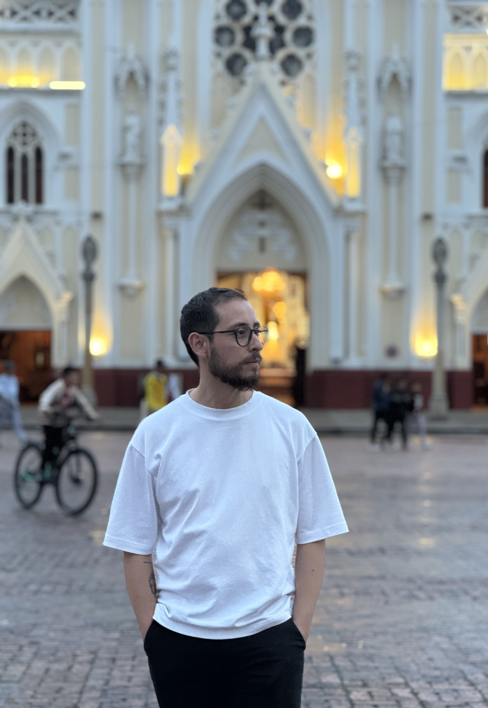

About
I'm Nicolás León, a media composer based in Bogotá specializing in atmospheric and narrative-driven scores. My work spans animated short films, video games, trailers, and live exhibitions — always built around the idea that music should be felt before it's heard.
My compositions have been part of projects recognized at FICCI, Santiago Horror Festival, Bakunawa Fest, Bogoshorts, and the Cinemateca de Bogotá.
Credits
Music composer
Photography exhibition · Trópico Atómico & Danta Cine
Trailer music composer
Best Animated Short — Santiago Horror Festival
Best Horror Film — Bakunawa Fest
Best Sound Design — Bogoshorts
Soundtrack composer · Co-producer
Best Animated Film — BR Banshee Festival
Best Horror Short — Scumdance
WIP Puerto Lab Prize — FICCI
Sound Design · Co-composer
Scores
A selection of original scores for film, games, and live media. Atmospheric, narrative-driven, and built to serve the story.
Listen on SoundCloud ↗Open to commissions for film, games, trailers, and live experiences.
nico.leonlope@gmail.com